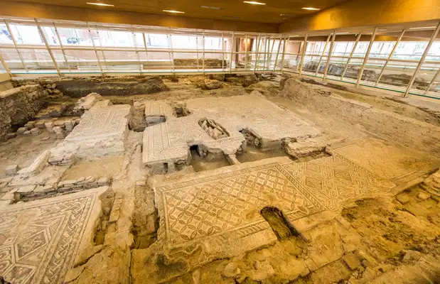
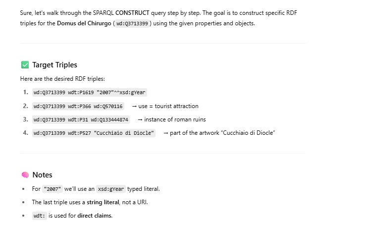
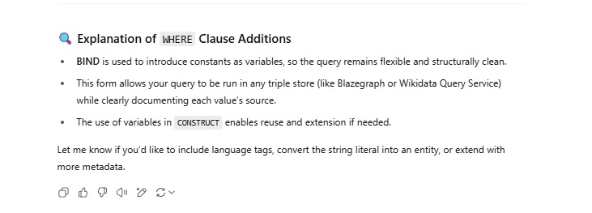
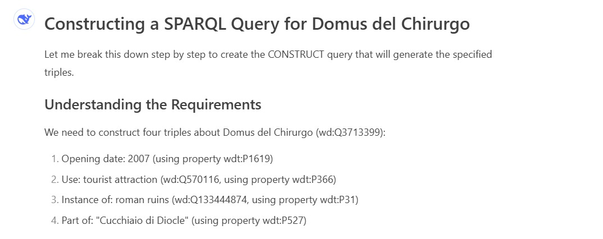
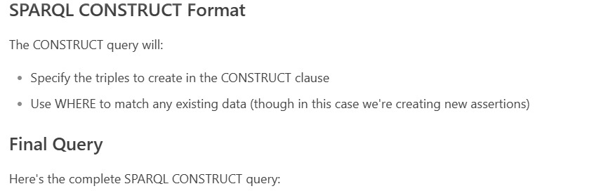
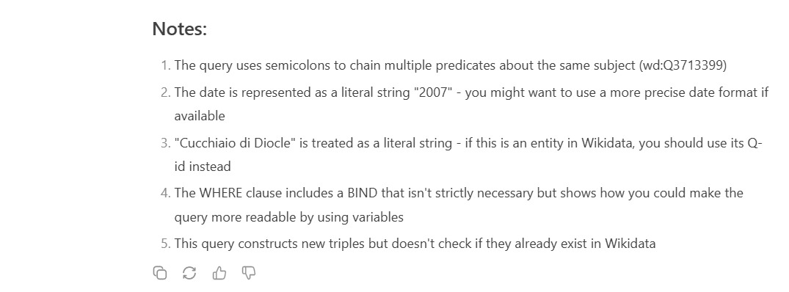

Domus del Chirurgo (ID Wikidata: Q3713399)
Investigated by Valeria Angeloni

🏛 Why the Domus del Chirurgo?
The Domus del Chirurgo in Rimini is an example of the typical houses (domus) of the upper classes citizens in Ancient Rome. The house was discovered in 1989, with all the mosaics and frescoes inside, all dating back to ancient Roman times. The domus takes its name from the utensils that were found inside, made from bronze and iron, and used by doctors to perform surgeries ("chirurgo" means "surgeon" in Italian). The collection of surgical instruments found inside counts up to 150 utensils, which makes it the richest surgical collection dating back to ancient times in the whole world. Examples of the utensils found inside are scalpels, pliers and chisels.
I decided to enrich its entity on Wikidata because I think it represents a unique monument, at the same level of the most famous landmarks of ancient Rome - such as the Colosseum or the Domus Aurea.
🔍 SPARQL queries to detect the gaps
DESCRIBE Query
Firstly, I used this query with the DESCRIBE function to see the properties and objects describing the Domus del Chirurgo monument and, eventually, find any gaps.
PREFIX wd: <http://www.wikidata.org/entity/>
PREFIX rdfs: <http://www.w3.org/2000/01/rdf-schema#>
PREFIX bd: <http://www.bigdata.com/rdf#>
PREFIX wikibase: <http://wikiba.se/ontology#>
DESCRIBE wd:Q3713399
WHERE {
SERVICE wikibase:label { bd:serviceParam wikibase:language "it,en". }
}
LIMIT 100
Through this query, I looked at all the properties used to define the monument. Moreover, in order to have a similar monument to compare it with, I used a similar query to investigate the Colosseum and find properties that could apply to the Domus del Chirurgo. Here is the query:
PREFIX wd: <http://www.wikidata.org/entity/>
PREFIX rdfs: <http://www.w3.org/2000/01/rdf-schema#>
PREFIX bd: <http://www.bigdata.com/rdf#>
PREFIX wikibase: <http://wikiba.se/ontology#>
DESCRIBE wd:Q10285
WHERE {
SERVICE wikibase:label { bd:serviceParam wikibase:language "it,en". }
}
LIMIT 100
This comparison helped me understand which parts of the Domus are well described and similar to the Colosseum. Moreover, it helped me see which information is missing and can be added.
SELECT Query
In the following query, I use the OPTIONAL function in order to check if the information is actually missing from the Domus del Chirurgo profile on Wikidata.
PREFIX wd: <http://www.wikidata.org/entity/>
PREFIX wdt: <http://www.wikidata.org/prop/direct/>
PREFIX rdfs: <http://www.w3.org/2000/01/rdf-schema#>
PREFIX ps: <http://www.wikidata.org/prop/statement/>
SELECT DISTINCT ?monuments ?monument_name ?use ?style ?date ?instance ?part
WHERE {
VALUES ?monuments
{ wd:Q3713399 }
?monuments rdfs:label ?monument_name .
FILTER(LANG(?monument_name) = "it")
OPTIONAL { ?monuments wdt:P366 ?use. } # I look for the description of the use
OPTIONAL { ?monuments wdt:P1619 ?date. } # I look for the date of official opening
OPTIONAL { ?monuments wdt:P31 ?instance. } # I look for the description of what the monument is instance of
OPTIONAL { ?monuments wdt:P361 ?part. } # I look for other entities which are part of the monument
}
}
Looking at the results, I notice that information regarding date of official opening and contained parts are missing, and decide to add them. Moreover, I notice I can enrich the properties of "instance of" and "has use", by adding respectively the entities "roman ruins" and "tourist attraction". These two entities were found in the description of the Colosseum, and I think they are relevant and can be applied to my monument, too. Therefore, I decide to enrich the profile by adding also these two.
🤖 Use of LLMs to enrich the knowledge graph
I look for missing information about date of official opening and contained parts in the official website of the monument. I find that:
- the date of official opening is 2007;
- a part contained in the domus is the "Cucchiaio di Diocle".
I then proceed to enrich the knowledge graph through the newly found information.
I asked Chat GPT to help me create the new query using CONSTRUCT. I gave all informations about namespaces and properties to the LLM, and I used a zero-shot chain-of-thought technique.
Then, I gave the exact same prompt to DeepSeek and compared the answers.
Zero-shot chain of thought prompt
My prompt was:
You are given the following ontology terms from wikidata:
- date of official opening: wdt:P1619 (property that links monument to the official date of its opening);
- has use: wdt:P366 (property linking a monument to its use);
- is instance of: wdt:P31 (property linking the monument to an instance it represents);
- part of: wdt:P527 (property linking the monument to the artwork contained in the monument itself);
- tourist attraction: wd:Q570116 (entity that represents a tourist attraction);
- roman ruins: wd:Q133444874 (entity that represents roman ruins);
- the id for the Domus del Chirurgo monument in Rimini: wd:Q3713399.
Write one single SPARQL query with CONSTRUCT, in order to construct the following triples (structure s-p-o):
- domus del chirurgo-date of official opening-2007;
- domus del chirurgo-has use-tourist attraction;
- domus del chirurgo-is instance of-roman ruins;
-domus del chirurgo-part of-“Cucchiaio di Diocle”.
Let’s think step by step."
Chat GPT's answer

PREFIX wd: <http://www.wikidata.org/entity/>
PREFIX wdt: <http://www.wikidata.org/prop/direct/>
PREFIX xsd: <http://www.w3.org/2001/XMLSchema#>
CONSTRUCT {
?monument wdt:P1619 ?openingDate .
?monument wdt:P366 ?use .
?monument wdt:P31 ?instance .
?monument wdt:P527 ?partOf .
}
WHERE {
BIND(wd:Q3713399 AS ?monument)
BIND("2007"^^xsd:gYear AS ?openingDate) # date of official opening
BIND(wd:Q570116 AS ?use) # tourist attraction
BIND(wd:Q133444874 AS ?instance) # roman ruins
BIND("Cucchiaio di Diocle" AS ?partOf) # part contained in the monument.
}

DeepSeek's answer


CONSTRUCT {
wd:Q3713399 wdt:P1619 "2007" ;
wdt:P366 wd:Q570116 ;
wdt:P31 wd:Q133444874 ;
wdt:P527 "Cucchiaio di Diocle" .
}
WHERE {
# No conditions needed since we're constructing new triples
# without checking existing data
BIND(wd:Q3713399 AS ?domus)
}

The results of the query are the same, but looking at the answers the LLMs gave me, there are some interesting things to notice. The most noticeable difference between the two LLMs is that Chat GPT gave me a complete query, together with correct prefixes and a much detailed WHERE part.
On the other hand, DeepSeek did not give any prefix, meaning that I would have to add them to the query in order for it to be meaningful. However, DeepSeek simplified the structure of the query and constructed triples without using the variable ?monument, which could be seen as useless considering that the prompt contains the Wikidata ID of the monument (wd:Q3713399).
Overall, I did not notice any mistake in prefixes or namespaces, so I would say that the LLMs I tested were efficient for my task, also considering the risks of the zero-shots technique.
✅ Correct CONSTRUCT query and triples
In conclusion, Chat GPT's answer was the most complete and precise, and I decided to use it and run it in Wikidata's SPARQL endpoint. Let's look again at the final results:
Here are the final results with some well constructed triples: